刚刚开盘后的小型走势
开盘后在出现一个底部走平后缓慢上涨的走势
开盘出现相对强度走势的上涨
开盘出现跌势后，震荡
开盘后大跌，出现底部加速后，反转
开盘出现两段上涨走势
开盘出现冲高后，不断出现更低点走势
开盘出现冲高后，两段下跌走势
开盘大跌后，出现缓慢走高
开盘出现两段下跌走势
开盘后不断下跌，底部走平后，没有加速bar，反弹
开盘后不断上涨，走平后，继续上涨，形成真空
开盘后出现疑似两段下跌，但是徘徊后，大跌
开盘后冲高，从最高点快速下跌，然后缓慢反弹
开盘后出现了疑似的两段下跌。但其实是填补真空后大跌
开盘后，快速冲高，形成最后一浪上涨，然后第一浪下跌
刚刚开盘后的小型走势
开盘后，快速冲高，形成最后一浪上涨，然后第一浪下跌
TOP
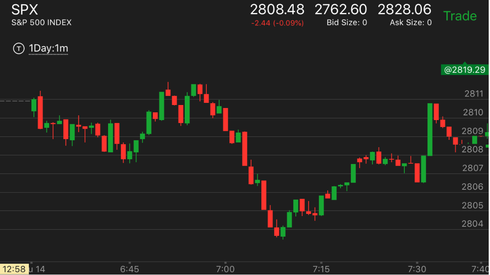
图示：开盘缓慢走低，建立跌势。然后冲高，冲到和开盘差不多的地方，
大跌。这个其实是第一浪。但是需要转折。
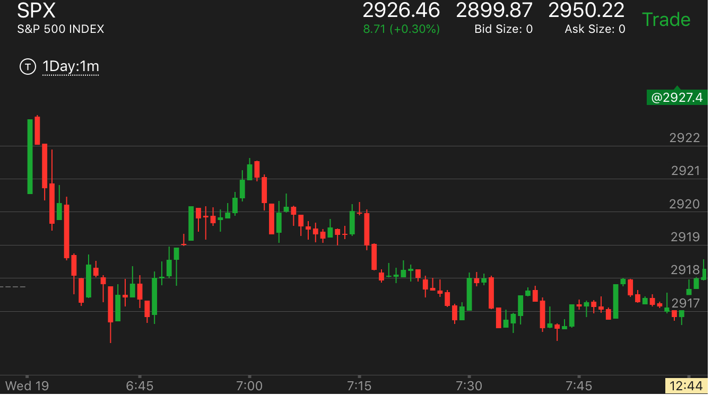
图示:第一个bar大幅冲高，然后下跌。可以认定，这个是第一浪下跌。
它在底部其实出现了一些见底的样子。但是6：45的下跌，没有出现加速走势，它的下跌速度比前面的下跌速度要慢，
反而反弹了。这个说明它会继续跌。它反弹后，继续下跌。
开盘后出现了疑似的两段下跌。但其实是填补真空后大跌
TOP
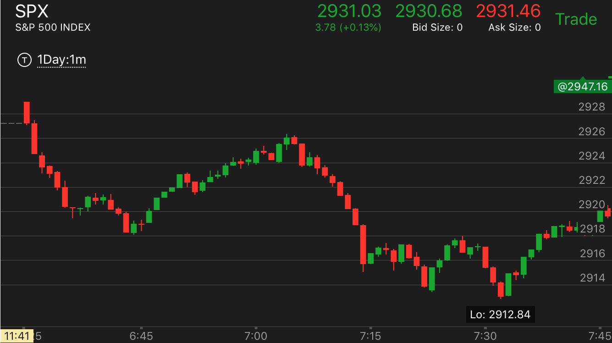
图示：开盘后，不断走低，稍微反弹后，再次下跌。然后反弹。似乎是个底部。两段走势不一定是底部。要看两段走势的反弹的样子。
这个走势反弹速度很快。而且在反弹的过程中出现了两段上涨。6：55就是一个转折。然后继续涨。7：走平后，加速冲高。这个就是顶部了。应该卖掉
继续观察。不能以为它一定要超过开盘点。因为这个不一定是反转走势，可能只是一个填空走势。
而且从前面看，这个也不像是底部。所以从6：45开始的反弹是个填补真空的行动。直到7：15才是下跌的第二段。
开盘后冲高，从最高点快速下跌，然后缓慢反弹
TOP
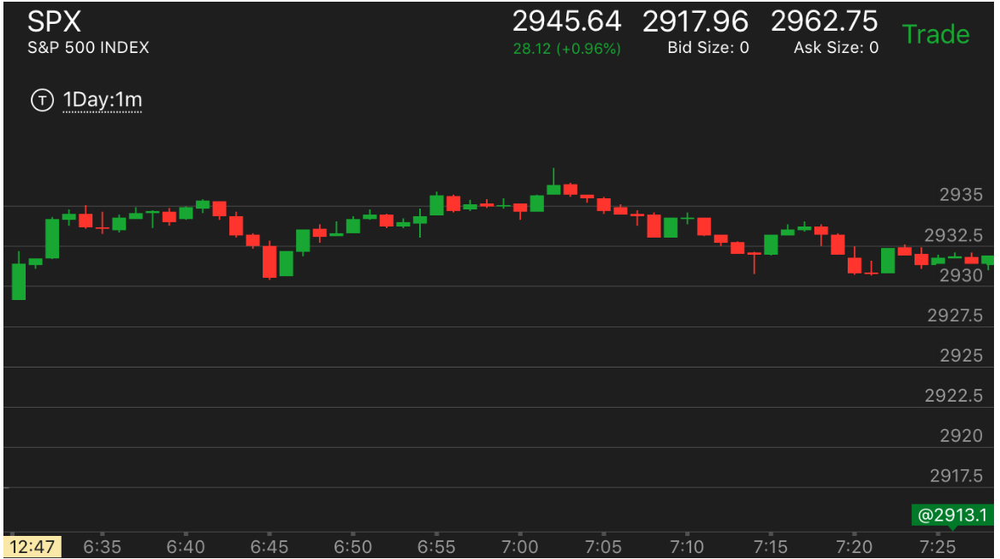
图示：开盘冲高，在高点缓慢走平。然后快速下跌。这样表示会涨。
但是也可能是大跌的第一浪。所以一定要等它开始反弹才能确认。
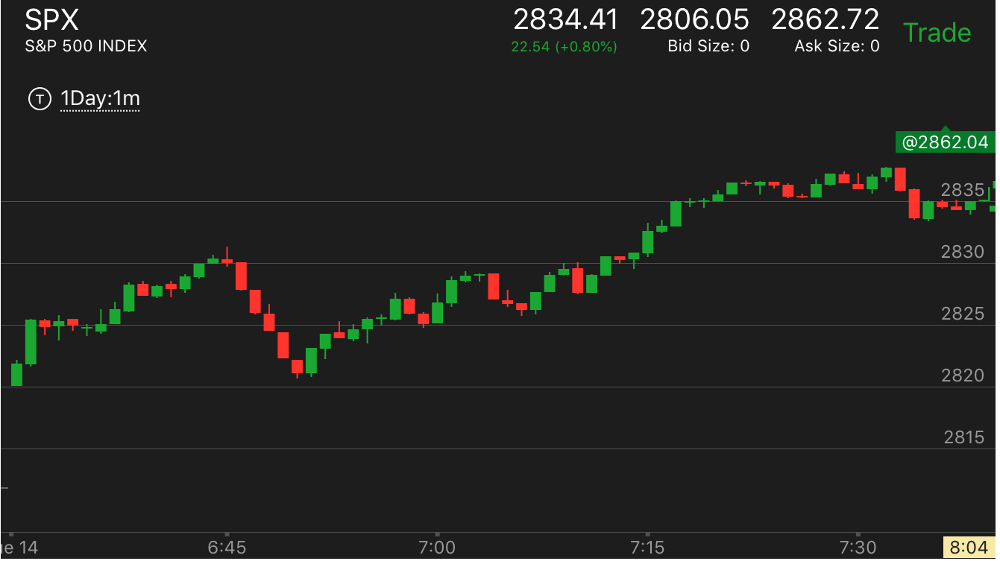
图示：这个走势冲高，走平后，再次冲高。然后快速回调。前面没有很慢的开始，这样不是一个真的跌势，而是快速回调。
这个和第一个bar是下跌的情况是不一样的。一开始就上涨，那么一定就是升势。那么跌势的开始一定要很慢才对。
开盘后出现疑似两段下跌，但是徘徊后，大跌
TOP

图示：开盘后，走低，拉回，再次走低，反弹。这个不能认为是两段下跌走势。要注意它第二段的速度。不快。
而且它立刻就反弹了。没有底部停留。它反弹后，就停留在稍微搞得位置，而不是很快走高。而且一直没有超过前面两段走势的走平点。
说明不是一个两段下跌走势。它在这个位置停留了15分钟。时间很长。也可以把它看作一个合并走势，这样开始就更加不是一个两段走势了。
开盘后不断上涨，走平后，继续上涨，形成真空
TOP

图示：低开了10点，而前几天连续下跌。所以这个低开本身就又一定的动力.
开盘后，不断上涨，涨幅很大。中间虽然不断回调，从更大的尺度看，
形成了真空。10：45出现了跨越上涨。说明会继续上涨。它开始走平。 11：30出现了走平后，继续上涨的
样子。这个就是顶部了。11：30这个上涨其实也是一个顶部加速走势。所以不需要停留很久，就可以做空。
它从11：40开始回调。速度很快。说明不是要大跌，而是填补真空。真空位置是2867.5.填补后，继续上涨。

图示：开盘后缓慢上涨，不断的回调。直到7：20不再回调直接上涨。
开盘后不断下跌，底部走平后，没有加速bar，反弹
TOP

图示：开盘大跌，然后反弹，再次下跌，似乎是个底部，但是它下跌速度并不快，所以其实这个并非底部，
不能反转开盘的跌势，但是可以是个临时的底部。
开盘大跌后，出现缓慢走高
TOP
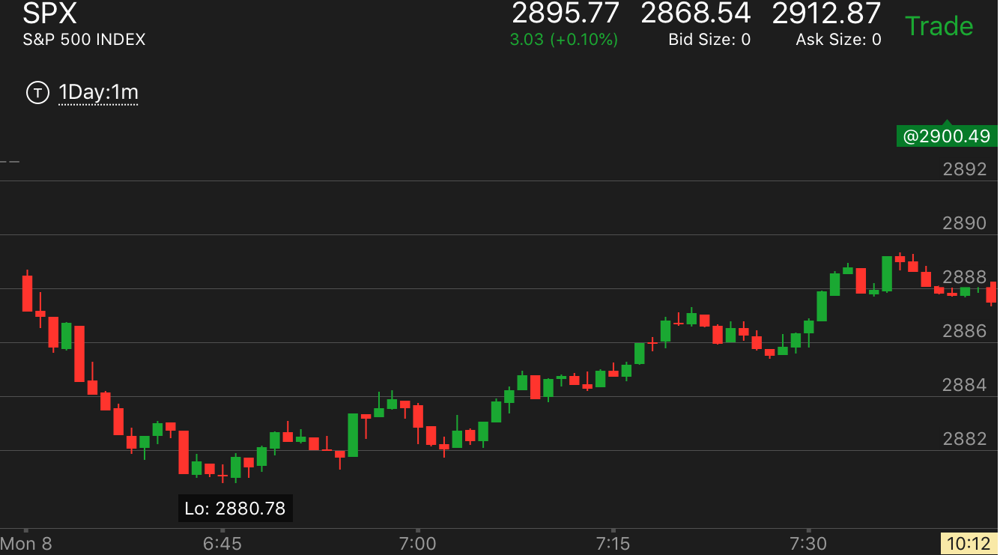
图示：
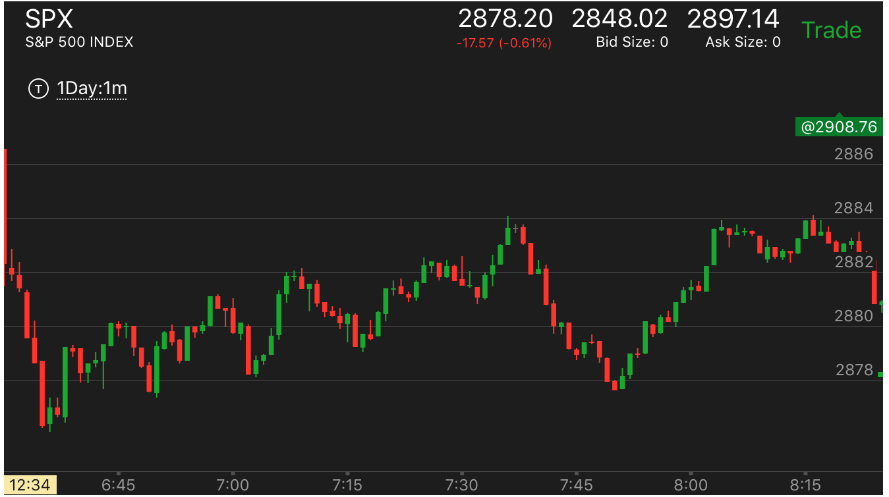
图示：
开盘出现冲高后，两段下跌走势
TOP

图示：开盘10分钟后，冲高下跌，然后停留几分钟，继续下跌。
这个下跌出现加速的样子，表示到底了。虽然总的看起来不大，然而是一个短期底部。
甚至是一天的底部。

图示：开盘冲高，出现两段下跌。这个两段下跌恰好回到开盘点。然后开始缓慢上涨。
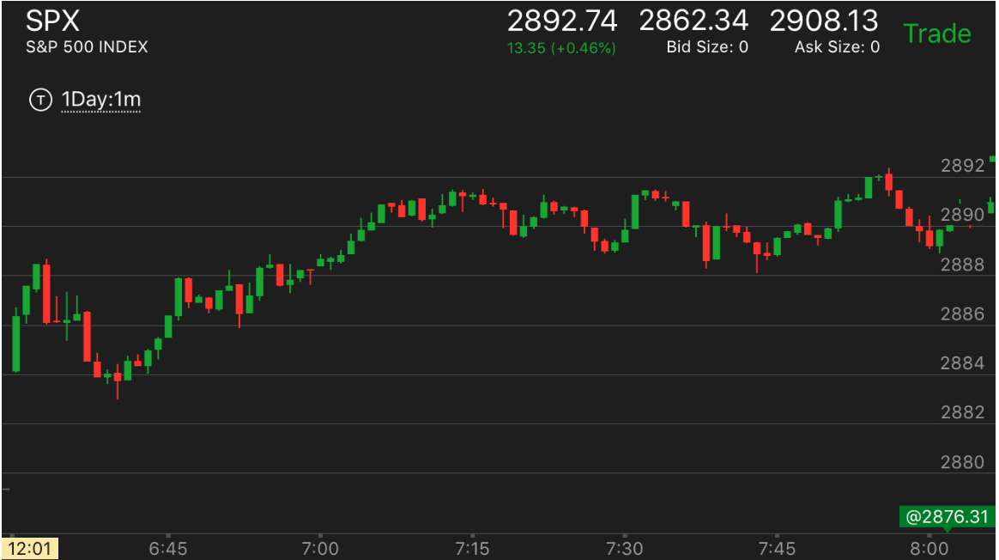
图示：开盘后，快速冲高，然后立刻下跌，走平后再次下跌。可以看到，
两次下跌速度很快。走平时间很短，只有3分钟。这样的两段走势也很小。它一旦走平，就可以做多。
这个两段走势结束了。所以是一个上涨走势的开始。
开盘出现冲高后，不断出现更低点走势
TOP

图示：开盘后，冲高，然后每个低点都出现了比原来低。然后冲高和前面一样高后，大幅下跌到达底部。
开盘出现两段上涨走势
TOP
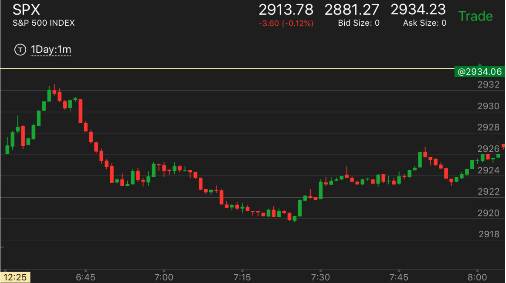
图示：开盘后出现了两段上涨。它下跌速度很快。但是仍然低于上涨速度。
它下跌后，并没有填补真空，6：55它反弹的时候，跨越拉回的点，然后在高点停留一分钟。这样就完成了反弹。继续下跌。
直到下跌两个台阶以后，它才开始反弹。填补一部分真空后，大跌。

图示：开盘出现了两段上涨后，它的反向走势非常的缓慢。
而且在开盘点附近不断徘徊很久。下跌的时候也很慢，这样的下跌可以持续。
后来出现了底部加速走势。但是只是部分反转。

图示：开盘后，上涨，然后走平，再次上涨。在顶部走平几分钟后，突然大跌。要记住这个大跌是个第一浪下跌。所以还会继续下跌。
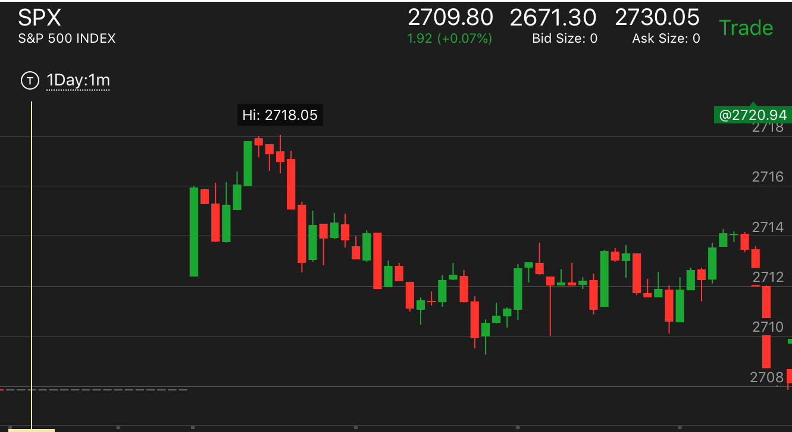
图示：刚刚开盘后，冲高，回调，再次冲高。这样就是一个两段上涨走势了。它在顶部走平。更加证明这个要大跌了。

图示：开盘后，大幅冲高，立刻回调，再次冲高，在高点停留几分钟。这样就成了两段上涨走势。

图示： 开盘缓慢上涨后，6：35加速然后继续缓慢上涨。要注意它每次创新高都是跨越新高，说明没有到达顶部。
然后7：00大涨，这样形成了两段上涨走势。

图示：开盘后，连续冲高，然后走平，再次加速冲高，冲高后，立刻下跌。然后再次冲高，创新高后，下跌速度比上一个峰要慢一些。
这时就可以做空了。要看到这个下跌还是比较快的。从最高点很快就下跌了。没有走平的走势。说明还是要反弹一下的。它下跌后，反弹了。

图示：，
1. 刚刚开盘后，出现上涨，然后走平几分钟，然后加速冲高。这个就是一个两段上涨走势的结束。
2. 它开始下跌，在顶部走出了双顶走势后，下跌.可以看到它第二个顶虽然开始下跌很快，但是回调很大，结果下跌速度其实比第一个顶要慢。
这样符合一个顶的样子。
3. 6：45下跌后，走平，再次下跌，下跌走势结束。开始了升势。

图示：一开盘先是下跌两分钟。说明后面开始的涨势是第一浪。这个和一开盘就不断涨不同。
第一浪上涨后，走平10分钟，再次上涨。两段走势结束。6：55开始下跌第一段。7：10反弹回到原位，再次下跌。
跌幅更大。出现加速。两段下跌结束。从相对论分析，7：10的反弹很大，回到原位。那么7：15的下跌更加会回去的。
可以确定一定会涨。
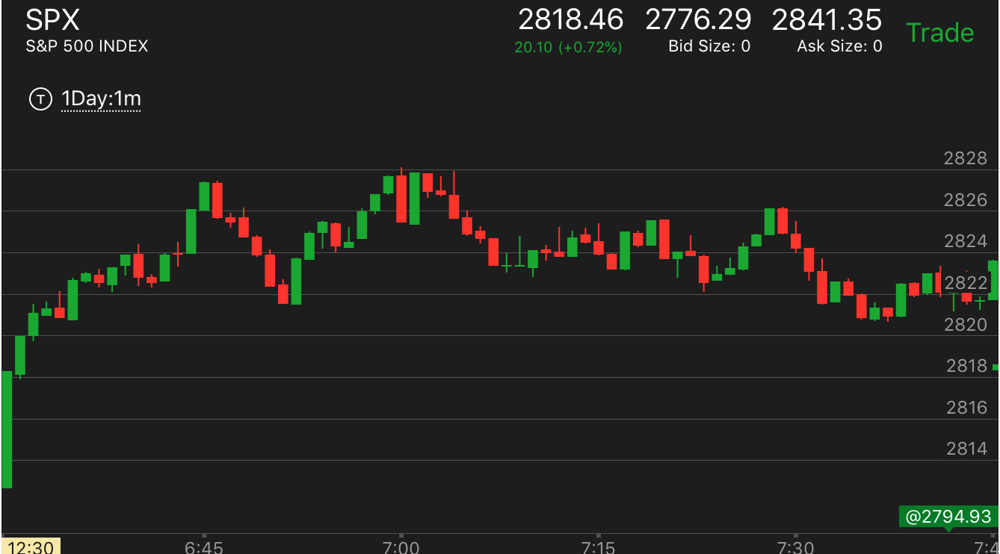
图示：一开盘就不断上涨，然后走平走缓慢，然后6：40再次加速上涨。这样两段走势就结束了。
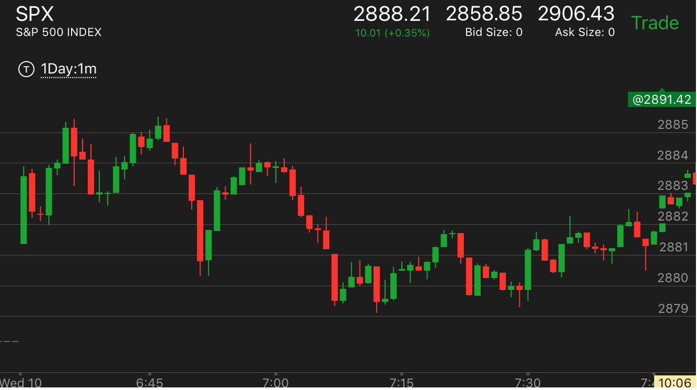
图示：开盘后，冲高，然后回调，然后继续冲高。立刻回调，然后再次回到高点。这时在高点走平时间长一些。
然后大跌。开始第一浪下跌。
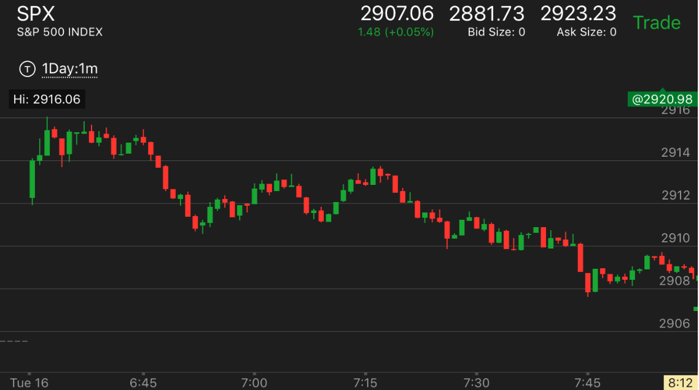
图示：一开始就上涨，然后回调，再次上涨。要注意这个再次上涨没有创新高，而是平齐，然后再高处一直走平。
这样也是一个两段走势。

图示：
1. 开盘冲高，回调两分钟，再次冲高。6：37两段上涨结束。
2. 6：38第一浪下跌。走平后，6:45第二浪下跌。
2. 6：50开始的第一浪上涨，幅度很大，没有回调，它稍微走低后，再次冲高。因为它前面没有回头。这样就到达了顶部。这样就进入了跌势。
两段升势结束了。7：05开始第一段跌势，反弹后，再次准备第二段跌势。
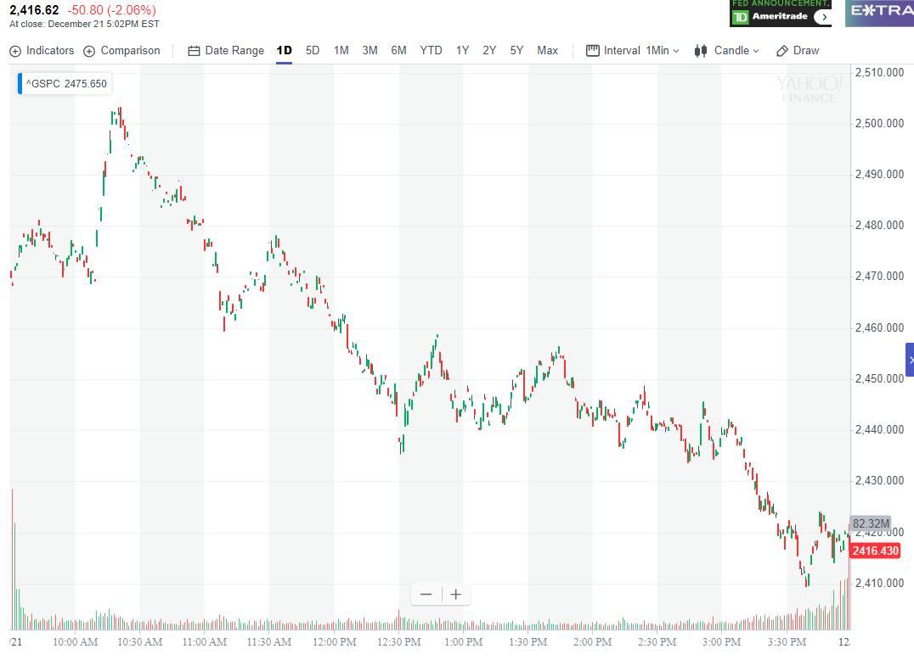
图示：开盘后，冲高，出现第一浪，然后回调所有涨幅，下跌点高于或者和开盘平齐。
形成双底后大涨。
开盘后大跌，出现底部加速后，反转
TOP

图示：开盘后大跌，然后回调后，继续大跌.10:00的时候，它下跌后，反弹很小。
10：20在没有反弹的情况下，再次走低。这样就成了底部加速。但是它反弹的时候，没有等待。而是从最低点一口气反弹到了2770.
这样就表示反弹结束了。再次下跌。
开盘出现跌势后，震荡
TOP

图示：开盘出现跌势，然后震荡。7：00出现了相对论走势。它下跌出现新低，然后很快拉回原来的高点。
再次下来。下来速度很快。并且出现了下跌后走平下跌的走势。然后冲高，表示反转了。冲高后，立刻拉回，为再次冲高准备。
可以想到，它一定会冲破原来的下跌高点的。它果然冲高到了原来的高点，然后开始下跌。因为仍然处于跌势。
所以升幅有限。如果是升势，会大涨。

图示：开盘后，下跌。反弹，一直走平后，再次下跌后见底反弹。
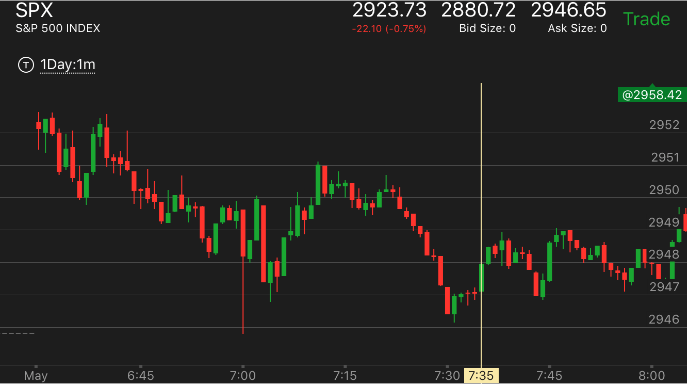
图示：开盘下跌后，6：36快速回调，而前面并没有两段走势。说明这个会下跌。7：05的时候，它快速反弹。
速度超过了下跌的速度。这个说明不是底部。7：20开始，连续下跌。说明这个至少是一个临时的底部了。从相对论的角度分析，前面很长时间下跌，
都反弹了那么高。这次快速下跌，跌的更低。更是要反弹了。
开盘出现相对强度走势的上涨
TOP
开盘后走平，然后快速上涨，被迅速拉回。这个有可能被误会为大跌走势。
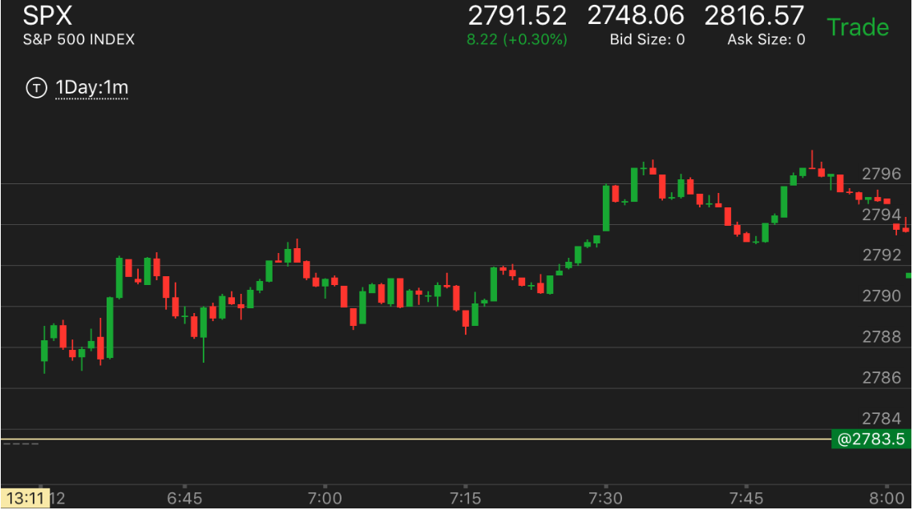
图示：开盘后走平后，立刻上涨。这种通常要大跌。但是这个拉回速度很快。反而成了另外一个走势。
下次它反弹再次创新高后，拉回。这样就成了相对强度走势。
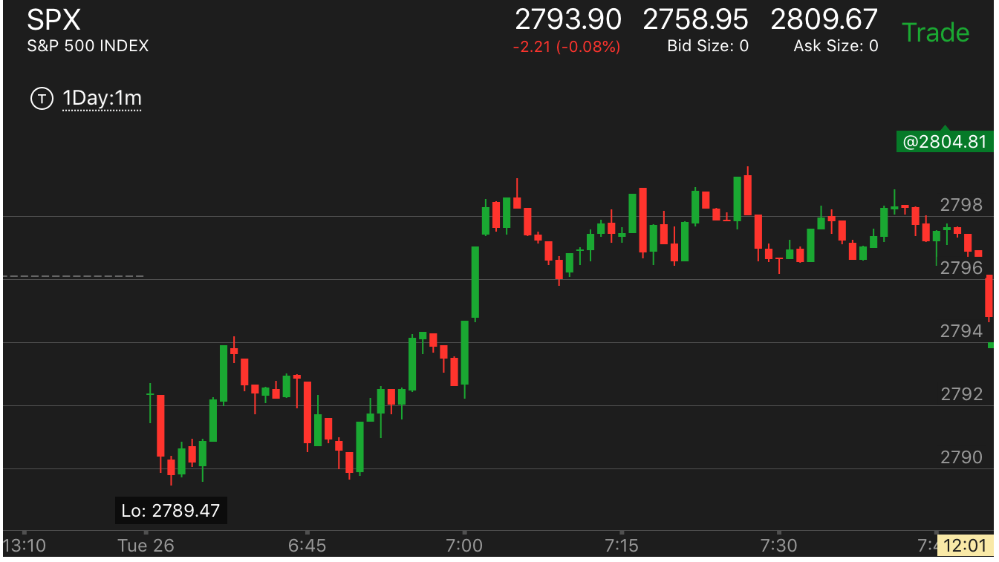
图示：
1. 6：35较大幅度上涨，然后分成两段走势回调全部涨幅。6：50再次上涨的时候，它上涨一下，就开始走平。和前面的涨不一样。这样就表示。它一定会超过前面
的顶点的。这样就建立了升势。两段走势开始了第二段。这个第二段不一定什么时候就结束，不能看到它第一段开始很早，就以为它会很快结束。
事实上，它直到收盘才结束。
开盘后在出现一个底部走平后缓慢上涨的走势
TOP

图示：一开盘，出现一个下跌，休息两分钟后，再次下跌。这样就成了一个两段下跌走势。它开始走平。
可以看到它走平时候很平。反弹持续时机很短。这样不会填补真空。虽然真空其实也很小。6：50它开始反弹。反弹的时候，很快拉回。
从速度上看，比前面的速度要慢的多。这样可以确定它一定会超过前面的高点的。可以做多。
开盘出现两段下跌走势
TOP
一开盘就出现两段下跌走势。要注意识别，即使晚了也不怕，可以追赶。
冲高后走平很久，然后大跌。这个出现在，走平的地方是阻力点。这样走平的地方就会下跌了。
前面冲高的时候，没有见到底部。
较大幅度冲高后，回调，但是回调幅度不大，不是典型的升势回调，就继续涨，但是很快被拉回。这样会大跌。
升势中，在下跌或者震荡过程中，先冲高，然后快速下跌，这样显得很吓人，但是却没有跌很多。完成了一个回调的任务。

图示：
-1. 6：35和6：50是两个跌势，就是一个两段跌势。可以看到6：50的跌幅更大。属于第二段，结束了。然后开始缓慢上涨。
0. 刚刚开盘后，走平4分钟，突然一个bar降低8个点，可以想到，真的下跌不会这样的。而且它也不是一开盘就下跌的走势，
所以一旦下跌停止，就可以做多。
1. 开盘后走低。然后反弹，到了开盘点，停下来，一直走平。这样就会大跌。因为开盘点是个阻力点。
而前面呈现跌势。
2. 7：05的时候，冲高幅度比较大，然后停下来，回调。似乎是个升势回调，但是它回调幅度太小了，只有2个点。
回调速度也很慢，不是升势回调。这样它试图再涨一下，被拉回后，形成一个顶部走势，大跌。
3. 7：00反弹，然后停止。似乎是个下跌后，反弹，再次大跌的走势。但是仔细看看。它的关键点是2530.它早就超过了这个点。所以它不是。
应该继续观察。
4. 7：15它在下跌当中，先上涨，然后快速下跌。没有跌很多，但是显得吓人。完成了回调后，大涨。
5. 6：50开始下跌，从最高点下跌，速度很快，前面也没有铺垫，一下跌了10个点，可以想象，真实的下跌不会如此，一定会反弹。

图示：一开盘，走低两分钟，然后回调，再次走低。这时幅度很大，出现加速状态。这样就是两段下跌了。

图示：一开盘，走高一分钟，大幅下跌。没有填补真空后，走平几分钟，再次大跌。

图示：
0. 6：38和7：00是一个两段下跌走势。可以看到7：00的下跌更加猛烈，幅度更大。这样就到达底部了。
1. 刚刚开盘，出现走低，反弹，再次走低。但是走低速度很高，然后走平。这个走势会反弹。
2. 它反弹后，出现了倾斜走低反弹的走势，6：55 然后加速下跌.
3. 到了7：00它出现狭窄底部走势，也就是说它的反弹很小，不足以填补真空。这样就是底部了。
稍微反弹一些，开始走平走平后，冲高，因为冲高幅度很大，所以它快速回调，这样形成了升势。
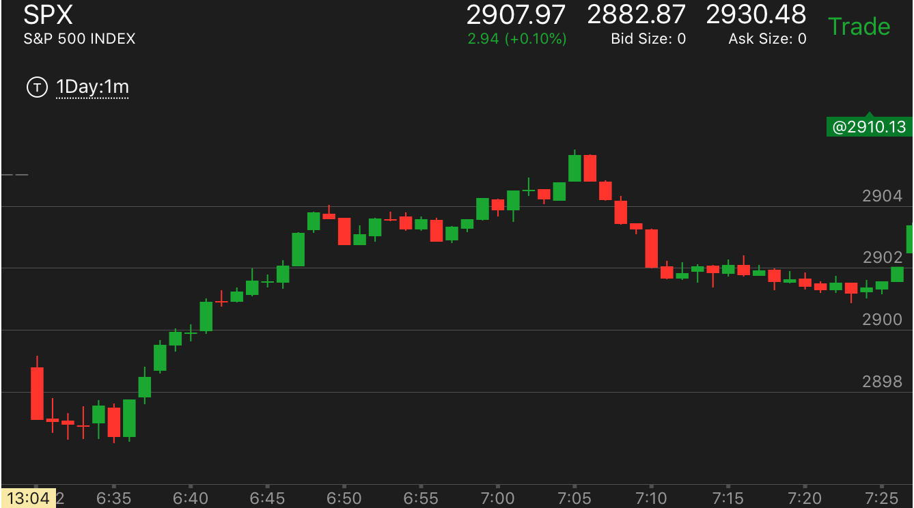
图示：开盘后，走低，然后走平。6：34分，反弹，再次下跌。其实和原来的低点一样高。但是这样就已经是一个两段
下跌走势了。可以做多。它会涨。
刚刚开盘后的小型走势
TOP
开盘建立上涨趋势

图示： 6:50冲高后，它形成一个双顶走势，双顶走势常常会破位后拉回。所以，7：05它冲高破位，
拉回原位，同时它上涨幅度比较大，又是刚刚开盘，容易反转。
刚刚开盘后，双底和双顶走势的判断。
1. 如果一开始就不断上涨或者下跌，然后回调，那么这个点不能是
顶或底的第一个点，一定要是大盘在盘中转折，来回两次才算双底或者双顶。
2. 制造新低或者新高的时候，一定是个加速的过程，不一定要很大。不能是缓慢的连续上涨。
3. 它一定会破位后，回来，回来的速度可能很快。

图示：
1. 刚刚开盘后，不断下跌，然后反弹，到了2655.再次下来，似乎是个加速下跌后，双底走势，
但是第一个底是一开盘就连续下跌形成的。不能算。所以它再这里徘徊是为了吸引人做多。然后它下跌。
到了7：10 和7：15的双底，才是真的双底，会反弹。
2. 从另外一个角度分析。它一开盘下跌，稍微反弹后，再次下跌，在前面的底部立刻反弹。这个其实是把下跌分为两段，显得下跌更加缓慢。
用相对论来分析。这个一定会大跌的。6：40又出现了反弹后，走平的样子。正好是下跌做空的最好时机。

图示：开盘后，6：38开始了第一浪下跌，反弹几乎回到原位后，6：48再次下来。这次出现加速。
说明是个第二浪的底部。它立刻反弹，再次下来，然后缓慢的反弹，这样就是一个底部了。开始了升势。
刚刚开盘后，创新低后，立刻反弹，没有双底
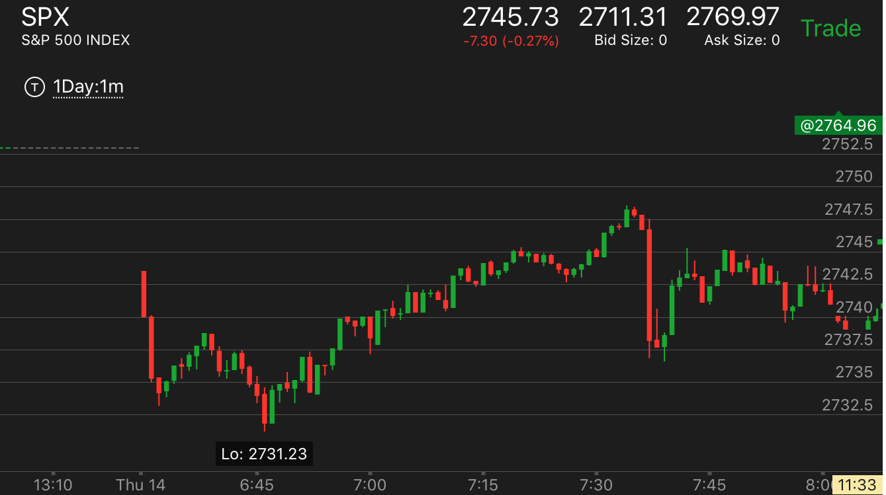
图示：6：45出现新低后，立刻反弹。我以为会再次回测一下。这个就是捞一把的想法。有时候可能回测。但是没有看清大势。就不能去做。
只看小的走势。在这个走势中，它不回头，立刻大涨。
其实这个也是一个底部走势，就是从低点立刻反弹，反弹幅度不大，然后走平。几分钟后大涨。所以在低点停留不到一分钟是可能反弹的。
刚刚开盘后，走低一点点，然后走平，再走低一点点，再次走平
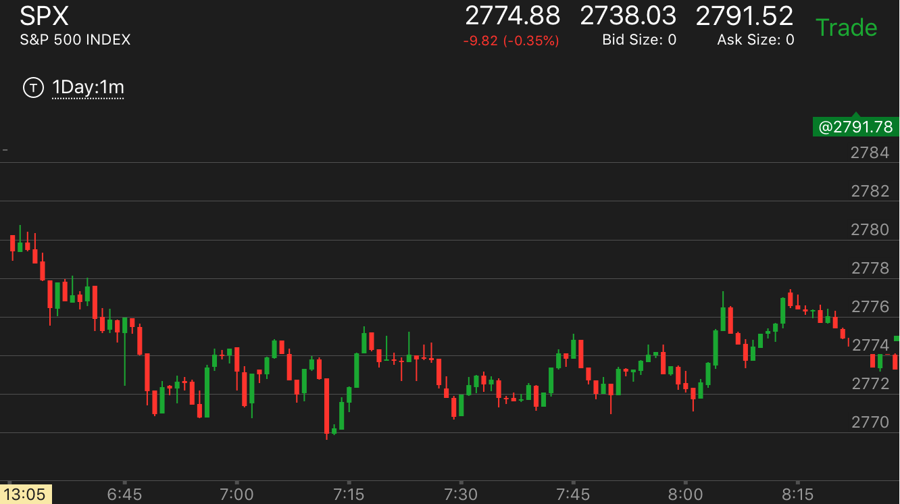
图示：刚刚开盘后，它走低一点点，走平几分钟，再次走低一点点，再次走平。这时应该做空。它会大跌的。
TOP
开盘后走平几分钟，然后冲高，幅度较大，然后走出下跌，反弹不到高点，走更低。这时应该立刻做空。
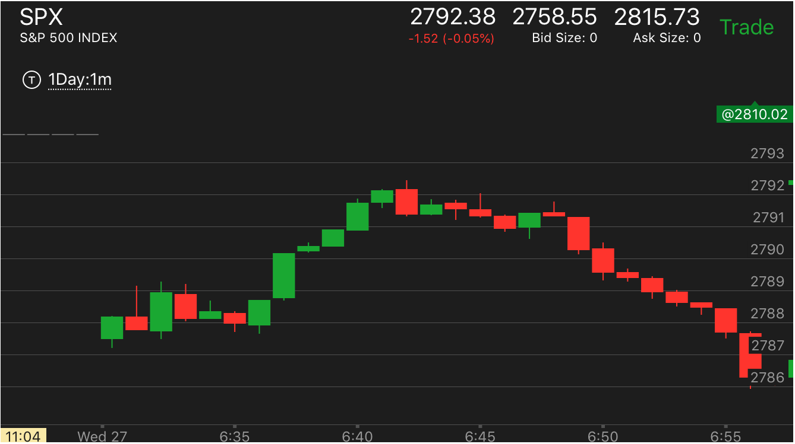
图示：开盘后走平6分钟，然后冲高。幅度有4个点。一般来说，这样的冲高无法维持，一旦走平，或者出现头部的样子，就可以做空。
它在高点出现了下跌，反弹，跌更低的走势。这就可以做空了。